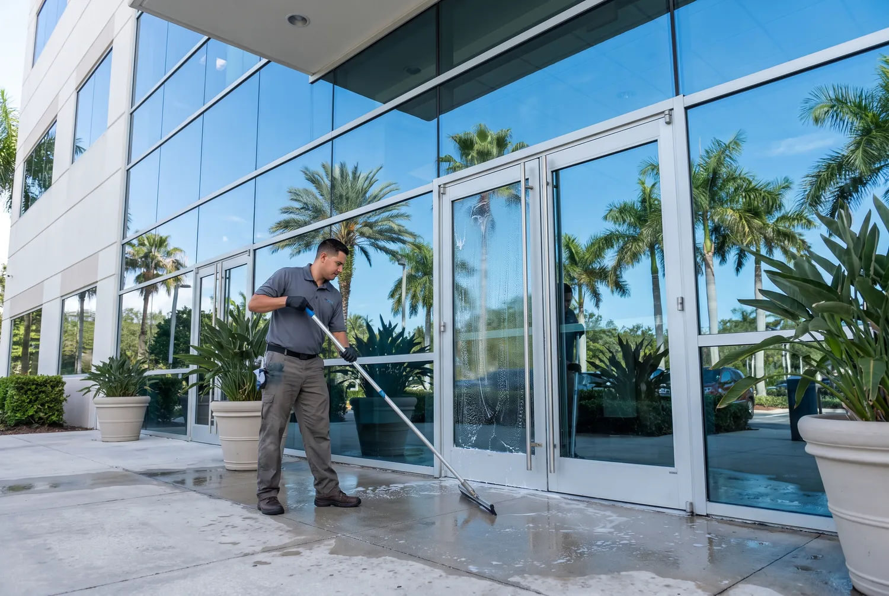
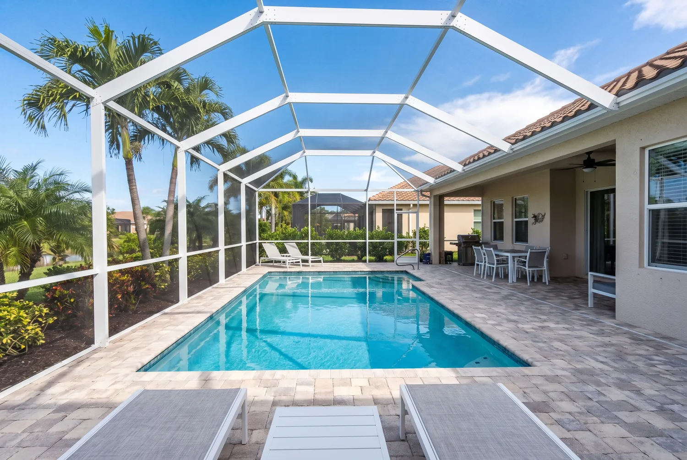
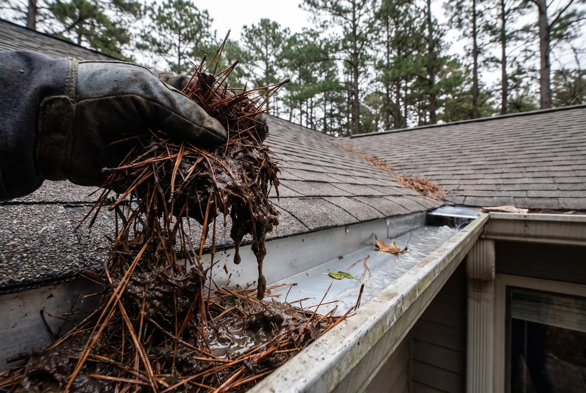

Residential Window Cleaning
Standard exterior or interior-plus-exterior cleaning for houses and townhomes anywhere in Jacksonville, from Riverside bungalows to Mandarin two-stories. Every pane is rinsed, scrubbed, rinsed again, and squeegee-dried, with tracks and sills wiped down as part of the visit.
Salt film, pollen, and hard water spotting build up faster in Northeast Florida than most other regions, and ignoring it for too long lets mineral deposits bond permanently to the glass, which then requires a stronger treatment to remove. A homeowner who skips a season or two usually ends up paying more later for the same result.
See full details on residential window cleaning. Call us today for residential window cleaning in Jacksonville.

Commercial Window Cleaning
Storefronts, offices, medical buildings, and low-rise properties along Jacksonville's business corridors are cleaned on a one-time or recurring monthly schedule. Exterior glass is priced per pane, and scheduling is built around your business hours so cleaning never interrupts customers.
A dirty storefront window is one of the fastest ways to signal a business is not being maintained, even if everything inside is spotless. Regular commercial cleaning keeps glass presentable and protects the seals and frames from the same salt and mineral buildup that affects homes.
See full details on commercial window cleaning. Call us today for commercial window cleaning in Jacksonville.

Screen Enclosure & Pool Cage Cleaning
Pool cages and lanais are the biggest surface on most Jacksonville homes and the one nobody can reach. Oak pollen, mildew and salt film build up in the mesh until the whole enclosure reads grey and the view through it goes flat.
We soft wash rather than pressure wash, because mesh tears under high pressure. We also clear the hollow gutter built into the cage beam — the one most homeowners never knew existed and the one that breeds mosquitoes when it packs with pine straw — and re-screen torn panels while we are up there. Window and door screens get cleaned on the same visit.
See full details on screen and pool cage cleaning. Call us today for screen enclosure cleaning in Jacksonville, FL.
Hard Water Stain Removal
Cloudy white mineral spotting from hard water needs more than soap and a squeegee. A pure-water rinse process strips dissolved minerals from the rinse water itself, so it evaporates clean and does not leave new residue behind for future spots to latch onto.
Left untreated, hard water deposits can etch into glass over months, which turns a cleaning job into a permanent cosmetic issue. Jacksonville's municipal water and the higher-mineral well water common in parts of St. Johns County both make this a frequent request from local homeowners.
See full details on hard water stain removal. Call us today for hard water stain removal in Jacksonville.

Gutter Cleaning
Jacksonville takes more than fifty inches of rain a year, most of it in short violent bursts. A gutter packed with pine straw sends that water down the fascia instead of the downspout, and wet wood in this humidity rots faster than most homeowners expect.
We hand-clear the troughs rather than blowing debris across your roof and beds, flush and confirm every downspout, and report on loose hangers, separated seams and soft fascia while we are on the ladder. Most homes here need it twice a year, not once, because live oaks and pines shed continuously rather than in one autumn dump.
See full details on gutter cleaning. Call us today for gutter cleaning in Jacksonville, FL.
Not Sure Which Service You Need?
Call and describe what you are seeing on your glass. We will tell you honestly what it will take to fix it.
Call (904) 944-7358